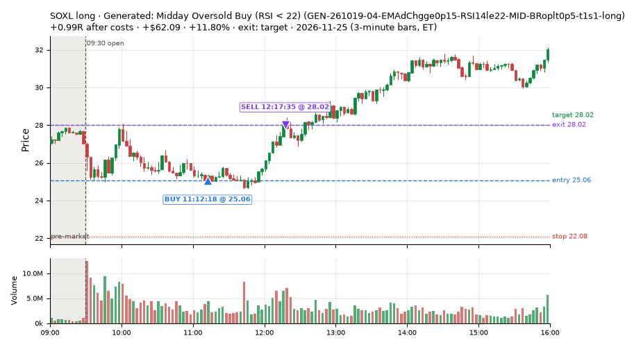
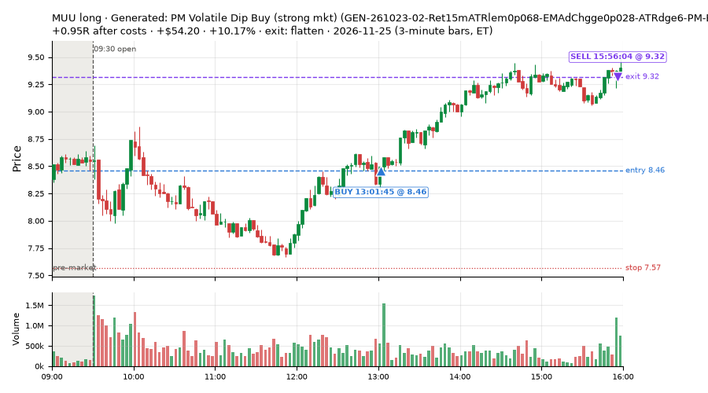
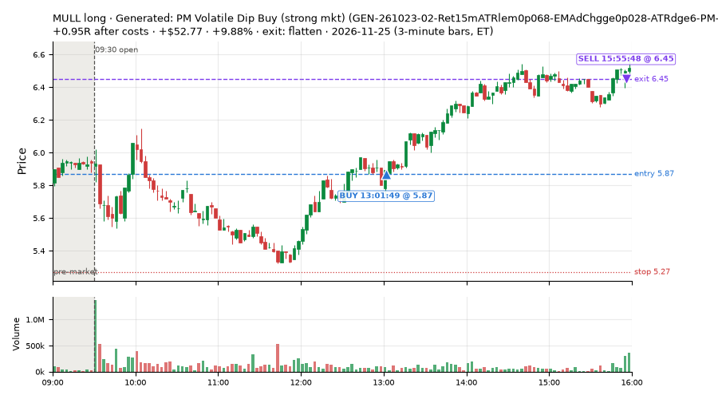
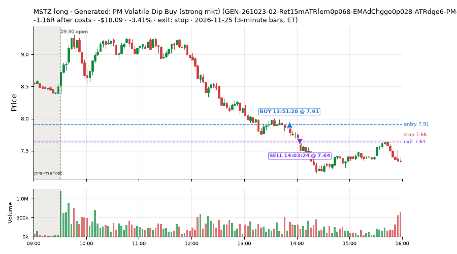
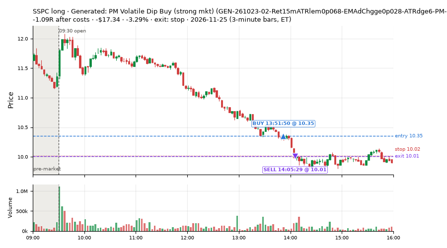
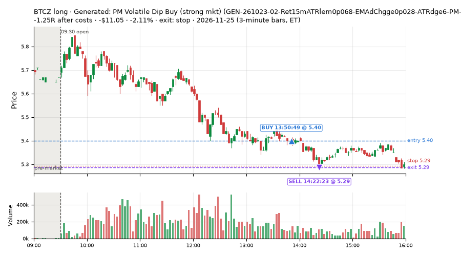
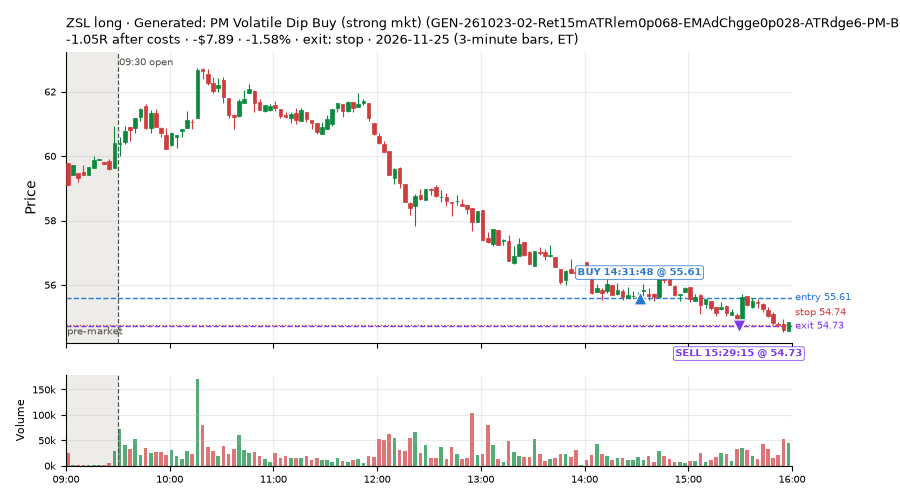
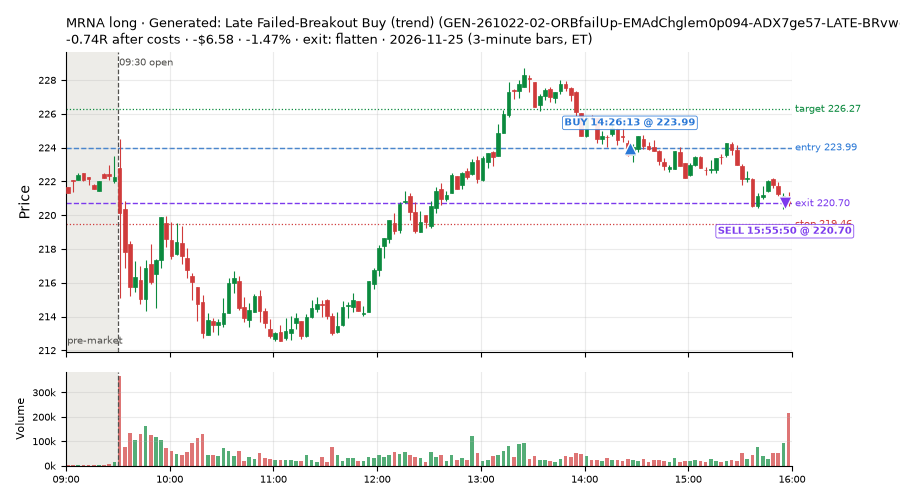

106 trades · win rate 63% · P/L $763.82
PROBATION: no live setup has passed both locked test periods. 10 owner-directed setups added 2026-10-08 (MarcoFlow top 5 + 5 new), untested live. RW6G1 (RW6 + VWAP band guard) added 2026-10-09, probation.

| Symbol | Setup | Side | In | Out | Entry | Exit | Exit reason | % gained | P/L |
|---|---|---|---|---|---|---|---|---|---|
| SOXL | Generated: Midday Oversold Buy (RSI < 22) (GEN-261019-04-EMAdChgge0p15-RSI14le22-MID-BRoplt0p5-t1s1-long) | long | 11:12 | 12:17 | 25.06 | 28.02 | target | +11.80% | $62.09 |
| MUU | Generated: PM Volatile Dip Buy (strong mkt) (GEN-261023-02-Ret15mATRlem0p068-EMAdChgge0p028-ATRdge6-PM-BRopgt0p65-hold-long) | long | 13:01 | 15:56 | 8.46 | 9.32 | flatten | +10.17% | $54.20 |
| MULL | Generated: PM Volatile Dip Buy (strong mkt) (GEN-261023-02-Ret15mATRlem0p068-EMAdChgge0p028-ATRdge6-PM-BRopgt0p65-hold-long) | long | 13:01 | 15:55 | 5.87 | 6.45 | flatten | +9.88% | $52.77 |
| Symbol | Setup | Side | In | Out | Entry | Exit | Exit reason | % lost | P/L |
|---|---|---|---|---|---|---|---|---|---|
| MSTZ | GEN-261023-02-Ret15mATRlem0p068-EMAdChgge0p028-ATRdge6-PM-BRopgt0p65-hold-long | long | 13:51 | 14:03 | 7.91 | 7.64 | stop | -3.41% | $-18.09 |
| SSPC | GEN-261023-02-Ret15mATRlem0p068-EMAdChgge0p028-ATRdge6-PM-BRopgt0p65-hold-long | long | 13:51 | 14:05 | 10.35 | 10.01 | stop | -3.29% | $-17.34 |
| BTCZ | GEN-261023-02-Ret15mATRlem0p068-EMAdChgge0p028-ATRdge6-PM-BRopgt0p65-hold-long | long | 13:50 | 14:22 | 5.40 | 5.29 | stop | -2.11% | $-11.05 |
| ZSL | GEN-261023-02-Ret15mATRlem0p068-EMAdChgge0p028-ATRdge6-PM-BRopgt0p65-hold-long | long | 14:31 | 15:29 | 55.61 | 54.73 | stop | -1.58% | $-7.89 |
| MRNA | GEN-261022-02-ORBfailUp-EMAdChglem0p094-ADX7ge57-LATE-BRvwgt0p7-t05s1-long | long | 14:26 | 15:55 | 223.99 | 220.70 | flatten | -1.47% | $-6.58 |








Signal to fill: median 1s, 90th percentile 4s (106 trades). Bars close each minute; the order follows the bar close.
Best excursion (MFE): median 0.84R; worst (MAE) median 0.37R. 16% of trades never got +0.25R in our favour; 3 reached +1R and still closed at or below 0.
| Symbol | Setup | Best R | Worst R | Closed R |
|---|---|---|---|---|
| SBIT | GEN-261023-02-Ret15mATRlem0p068-EMAdChgge0p028-ATRdge6-PM-BRopgt0p65-hold-long | +1.48 | -1.38 | -1.16 |
| VICI | GEN-261021-04-NewHOD-PDHdistlem0p65-LAM-QQQltm0p6-hold-short | +0.65 | -1.16 | -1.24 |
| UDR | GEN-261021-04-NewHOD-PDHdistlem0p65-LAM-QQQltm0p6-hold-short | +0.55 | -1.27 | -1.30 |
| ZSL | GEN-261023-02-Ret15mATRlem0p068-EMAdChgge0p028-ATRdge6-PM-BRopgt0p65-hold-long | +0.72 | -1.03 | -1.05 |
| O | GEN-261021-04-NewHOD-PDHdistlem0p65-LAM-QQQltm0p6-hold-short | +0.50 | -1.02 | -1.16 |
| Entry time | Trades | Win | Avg R | P/L |
|---|---|---|---|---|
| 09:50-10:30 | 3 | 100% | +3.22 | $35.40 |
| 10:30-11:30 | 47 | 66% | +0.38 | $582.50 |
| 11:30-13:00 | 5 | 60% | +0.01 | $21.57 |
| 13:00-14:00 | 17 | 59% | +0.19 | $106.72 |
| 14:00-16:00 | 34 | 59% | -0.01 | $17.63 |
| Setup | Trades | Win | Avg R after costs | Adj R (net of SPY) | Avg R ex-market (all sessions) | P/L |
|---|---|---|---|---|---|---|
| Generated: Midday Oversold Buy (RSI < 22) (GEN-261019-04-EMAdChgge0p15-RSI14le22-MID-BRoplt0p5-t1s1-long) | 30.0 | 100% | +0.97 | +0.48 | -0.07 (beta +0.62, n 261) | $575.38 |
| Generated: Late RSI Drop Short (big bar) (GEN-261020-02-RSIslopelem19-BarRngATRge0p14-BuyPressge0p17-LATE-BRvwgt0p7-t05s1-short) | 18.0 | 67% | +0.03 | +0.04 | +0.11 (beta -1.82, n 18) | $5.17 |
| Generated: Midday Stretched Dip Buy (GEN-261020-09-EMAdChgge0p093-Z12lem0p82-VWAPcrossesle0-MID-QQQltm0p3-holdtr-long) | 2.0 | 100% | +3.05 | +1.83 | +0.24 (beta +0.87, n 259) | $74.64 |
| Generated: Late-AM New-High Short (QQQ down) (GEN-261021-04-NewHOD-PDHdistlem0p65-LAM-QQQltm0p6-hold-short) | 19.0 | 11% | -0.86 | +1.17 | +0.19 (beta -0.55, n 92) | $-38.59 |
| Generated: Morning RSI Drop Buy (strong mkt) (GEN-261021-09-RSIslopelem19-ORHdistlem0p73-AM-BRvwgt0p7-t1s1-long) | 1.0 | 100% | +1.45 | +1.49 | -0.25 (beta +2.08, n 12) | $15.02 |
| Generated: Late Failed-Breakout Buy (trend) (GEN-261022-02-ORBfailUp-EMAdChglem0p094-ADX7ge57-LATE-BRvwgt0p7-t05s1-long) | 10.0 | 70% | +0.12 | +0.05 | +0.25 (beta -0.99, n 13) | $29.94 |
| Generated: PM Volatile Dip Buy (strong mkt) (GEN-261023-02-Ret15mATRlem0p068-EMAdChgge0p028-ATRdge6-PM-BRopgt0p65-hold-long) | 23.0 | 48% | +0.05 | -0.10 | -0.35 (beta +1.49, n 25) | $89.24 |
| Generated: Late-AM Pop Fade (SPY down) (GEN-261023-06-RSI7le38-Ret15mge0p54-EMAdiffge0p29-LAM-SPYltm0p25-t1s05-short) | 1.0 | 0% | -1.19 | -1.06 | +0.63 (beta -0.71, n 32) | $-7.36 |
| Podcast: Breadth Thrust, Index ETFs (observation) (GEN-POD1022-02-breadth-thrust-index-etf-holdtr-long) | 2.0 | 100% | +4.10 | +0.27 | – | $20.38 |
Market direction (SPY, beta 1) accounted for $163.80 of today's $763.82; the rest ($600.02) came from the setups themselves. Avg R net of SPY: +0.38 (incl. a hedge leg's cost; report only).
16 setups live today. Today: 135 signals, 106 taken, 0 lost because another setup held the symbol (0%). Since 2026-10-19 (28 sessions): 10456 signals, 4526 taken, 283 lost to other setups (3%). Peak open positions today 51 of 300 slots. Earnings blackout removed 118 symbols before scanning.
Simulated playing time (not live): 5905 what-if trades of signals not taken, avg -0.11R, 44% winners; of them 283 lost to another setup (avg -0.04R).
Silent: GEN-261021-08-RSI2le0-Ret15mATRge0p16-ATRdge3p6-LUNCH-QQQgt0p6-holdtr-long, GEN-POD1022-01-thrasher-breadth-thrust-stocks-holdtr-long
| Prio | Setup | Today sig / taken | Sessions | Signals / taken / trades | Taken/day | Expected/day | Lost to other setups | Lost to (setup n) | Top skip reasons | SIMULATED: not-taken n / avg R / win | Verdict |
|---|---|---|---|---|---|---|---|---|---|---|---|
| 1 | Generated: Late-AM New-High Short (QQQ down) GEN-261021-04-NewHOD-PDHdistlem0p65-LAM-QQQltm0p6-hold-short | 22 / 19 | 26 | 130 / 92 / 92 | 3.54 | – | 0 | – | spread / quote / size 22, not shortable / shorts off 15, broker rejected 1 | 38 / +0.59R / 47% | ok 17.7 entries/week |
| 2 | Generated: Midday Divergence Short (SPY up) GEN-261020-04-MACDhge0p12-BullDiv-MID-SPYgt0p25-t05s1-short | 0 / 0 | 27 | 84 / 9 / 9 | 0.33 | – | 1 | GEN-261028-05-EMAdChgge0p093-ORLdistlem0p42-LAM-QQQgt0p6-holdtr-long 1 | not shortable / shorts off 48, daily loss cap 20, spread / quote / size 4 | 75 / +0.06R / 72% | slow 1.7 entries/week; ~36 weeks to 60 trades |
| 3 | Generated: Morning RSI Drop Buy (strong mkt) GEN-261021-09-RSIslopelem19-ORHdistlem0p73-AM-BRvwgt0p7-t1s1-long | 1 / 1 | 26 | 23 / 12 / 12 | 0.46 | – | 2 | GEN-261023-03-RSI5le13-VWAPatrlem0p34-OPEN-BRvwgt0p6-holdtr-short 1, GEN-261026-05-Ret15mATRge0p042-FromPCATRge0p28-ORHdistlem0p38-OPEN-BRopgt0p5-hold-short 1, GEN-261029-08-Ret15mlem0p36-Flow3lem0p54-RSI14ge65-AM-SPYgt0p5-hold-short 1 | spread / quote / size 6, broker rejected 3, symbol held by another setup 2 | 11 / +0.67R / 91% | slow 2.3 entries/week; ~26 weeks to 60 trades |
| 4 | Podcast: Breadth Thrust, Index ETFs (observation) GEN-POD1022-02-breadth-thrust-index-etf-holdtr-long | 4 / 2 | 23 | 8 / 4 / 4 | 0.17 | – | 0 | – | spread / quote / size 4 | 4 / -1.02R / 0% | slow 0.9 entries/week; ~69 weeks to 60 trades |
| 5 | Generated: Lunch RSI(2) Flush Buy (volatile) GEN-261021-08-RSI2le0-Ret15mATRge0p16-ATRdge3p6-LUNCH-QQQgt0p6-holdtr-long | 0 / 0 | 21 | 0 / 0 / 0 | 0.00 | – | 0 | – | – | 0 / – | silent no signals in 21 session(s); no expected rate on file |
| 6 | Generated: Late-AM Pop Fade (SPY down) GEN-261023-06-RSI7le38-Ret15mge0p54-EMAdiffge0p29-LAM-SPYltm0p25-t1s05-short | 1 / 1 | 24 | 71 / 32 / 32 | 1.33 | – | 2 | GEN-261022-01-ORBfailUp-ATRdge7p9-Eff6ge0p55-AM-SPYdn-hold-long 2 | not shortable / shorts off 18, spread / quote / size 18, symbol held by another setup 2 | 39 / -0.54R / 23% | slow 6.7 entries/week; ~9 weeks to 60 trades |
| 7 | Podcast: Bull Flag Breakout or Bailout (observation) GEN-POD1022-03-wt-bull-flag-bailout-S-long | 0 / 0 | 23 | 9 / 3 / 3 | 0.13 | – | 0 | – | spread / quote / size 4, other 2 | 6 / +0.26R / 83% | slow 0.7 entries/week; ~92 weeks to 60 trades |
| 8 | Generated: Late RSI Drop Short (big bar) GEN-261020-02-RSIslopelem19-BarRngATRge0p14-BuyPressge0p17-LATE-BRvwgt0p7-t05s1-short | 21 / 18 | 22 | 22 / 18 / 18 | 0.82 | – | 0 | – | spread / quote / size 3, broker rejected 1 | 4 / +0.45R / 75% | slow 4.1 entries/week; ~15 weeks to 60 trades |
| 9 | Generated: PM Volatile Dip Buy (strong mkt) GEN-261023-02-Ret15mATRlem0p068-EMAdChgge0p028-ATRdge6-PM-BRopgt0p65-hold-long | 28 / 23 | 19 | 57 / 25 / 25 | 1.32 | – | 0 | – | broker rejected 17, spread / quote / size 13, price through stop/target 1 | 32 / +0.02R / 59% | slow 6.6 entries/week; ~9 weeks to 60 trades |
| 10 | Generated: Late Failed-Breakout Buy (trend) GEN-261022-02-ORBfailUp-EMAdChglem0p094-ADX7ge57-LATE-BRvwgt0p7-t05s1-long | 11 / 10 | 20 | 36 / 13 / 13 | 0.65 | – | 1 | GEN-261022-08-EMAdChglem0p094-Flow3ge1-RVolDayle0p59-AM-SPYgt0p25-holdtr-short 1 | broker rejected 21, symbol held by another setup 1, spread / quote / size 1 | 23 / +0.19R / 78% | slow 3.2 entries/week; ~18 weeks to 60 trades |
| 11 | Generated: Midday Oversold Buy (RSI < 22) GEN-261019-04-EMAdChgge0p15-RSI14le22-MID-BRoplt0p5-t1s1-long | 43 / 30 | 28 | 487 / 261 / 261 | 9.32 | – | 7 | GEN-261022-09-Ret15mATRlem0p16-BarRngATRge0p11-ADX7ge64-AM-BRvwlt0p3-hold-short 7 | spread / quote / size 138, daily loss cap 41, broker rejected 22 | 225 / +0.05R / 52% | ok 46.6 entries/week |
| 12 | Podcast: Breadth Thrust, Strong Large Caps (observation) GEN-POD1022-01-thrasher-breadth-thrust-stocks-holdtr-long | 0 / 0 | 18 | 0 / 0 / 0 | 0.00 | – | 0 | – | – | 0 / – | silent no signals in 18 session(s); no expected rate on file |
| 13 | Generated: Morning Failed-Breakdown Short GEN-261020-10-BBpctge0p81-ORBfailDn-AM-BRvwlt0p3-hold-short | 0 / 0 | 27 | 452 / 158 / 158 | 5.85 | – | 0 | – | per-setup cap 120, not shortable / shorts off 92, spread / quote / size 76 | 294 / -0.35R / 30% | ok 29.3 entries/week |
| 14 | Generated: Midday Stretched Dip Buy GEN-261020-09-EMAdChgge0p093-Z12lem0p82-VWAPcrossesle0-MID-QQQltm0p3-holdtr-long | 4 / 2 | 27 | 371 / 259 / 259 | 9.59 | – | 16 | GEN-261022-09-Ret15mATRlem0p16-BarRngATRge0p11-ADX7ge64-AM-BRvwlt0p3-hold-short 16 | spread / quote / size 79, symbol held by another setup 16, other 16 | 112 / +0.53R / 72% | ok 48.0 entries/week |
| 15 | Generated: Open Below-Prior-Low Buy (big bar) GEN-261021-02-BarRngATRge0p14-PDLdistlem0p045-OPEN-SPYgt0p5-t1s1-long | 0 / 0 | 24 | 740 / 287 / 287 | 11.96 | – | 7 | GEN-261023-03-RSI5le13-VWAPatrlem0p34-OPEN-BRvwgt0p6-holdtr-short 5, GEN-261027-07-RSI14le35-FromOpenge2-AM-BRvwlt0p5-t1s1-short 1, GEN-261029-09-RangeExpge1p6-Since950ATRlem0p43-OPEN-BRvwgt0p5-hold-short 1 | spread / quote / size 202, per-setup cap 161, other 80 | 453 / -0.06R / 51% | ok 59.8 entries/week |
| 16 | Generated: Late-AM Failed-Breakout Buy GEN-261029-01-ORBfailUp-RSI14le41-ADX7le29-LAM-QQQgt0p3-hold-long | 0 / 0 | 20 | 387 / 121 / 121 | 6.05 | – | 6 | GEN-261029-08-Ret15mlem0p36-Flow3lem0p54-RSI14ge65-AM-SPYgt0p5-hold-short 3, GEN-261022-08-EMAdChglem0p094-Flow3ge1-RVolDayle0p59-AM-SPYgt0p25-holdtr-short 2, GEN-261022-07-Z12lem1p9-FlowShiftlem0p96-ATRdge3p6-AM-BRopgt0p5-t1s1-short 1 | broker rejected 137, daily loss cap 75, spread / quote / size 48 | 266 / -0.21R / 40% | ok 30.2 entries/week |
Every trade is attached as a CSV you can open and edit in Excel or Google Sheets. Live page: https://misiti15.github.io/MCF/live/